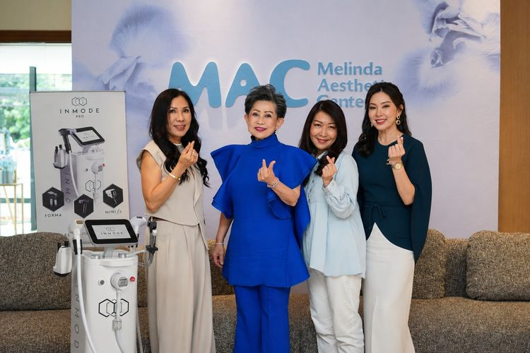

Pengencangan Kulit Makin Mengandalkan Teknologi Estetika Canggih
9 agustus 2026
Ilustrasi perawatan di klinik kecantikan.(Unsplash)
KOMPAS.com - Keinginan untuk mempertahankan kulit tetap kencang tanpa harus menjalani operasi plastik mendorong pesatnya perkembangan teknologi estetika nonbedah. Dalam beberapa tahun terakhir, berbagai perangkat skin lifting dan skin tightening berbasis energi, seperti high-intensity focused ultrasound (HIFU), microfocused ultrasound, radiofrequency (RF), hingga microneedling terbaru, semakin banyak digunakan di klinik kecantikan.
Kelebihan dari perawatan ini adalah menawarkan pengencangan kulit dengan waktu tindakan yang relatif singkat, minim rasa sakit, dan tanpa masa pemulihan yang panjang. Tak heran jika perawatan ini menjadi menjadi pilihan bagi mereka yang ingin memperlambat tanda-tanda penuaan tanpa pisau bedah. Tren tersebut juga tampak di berbagai kota di Indonesia. Prosedur nonbedah terus mendominasi layanan estetika, termasuk di kota Bandung, Jawa Barat. Klinik MAC (Melinda Aesthetic Center) misalnya, yang baru-baru ini menambah layanannya dengan teknologi terbaru, Morpheus8 dan InMode Lift.
Dijelaskan oleh dr. Liem Fenny, Sp.D.V.E, Morpheus8 adalah teknologi fractional radiofrequency dengan microneedling yang menawarkan pendekatan berbeda dibandingkan RF microneedling konvensional. "Morpheus8 bekerja hingga lapisan dermis dan jaringan subdermal melalui teknologi Burst Mode, yang memungkinkan penghantaran energi RF pada beberapa kedalaman hanya dalam satu kali penetrasi jarum," katanya.
Teknologi ini mampu menstimulasi pembentukan kolagen, mengencangkan kulit, memperbaiki tekstur, sekaligus membantu remodeling jaringan lemak sehingga menghasilkan kontur wajah yang lebih tegas dan alami dengan downtime yang relatif minimal. Selain Morpheus8, MAC turut menghadirkan InMode Lift sebagai solusi non-bedah yang memanfaatkan kombinasi teknologi radiofrequency canggih untuk mengencangkan kulit, memperbaiki elastisitas jaringan, mengurangi lemak berlebih pada area wajah dan leher, serta menghasilkan efek lifting yang natural tanpa harus menjalani prosedur operasi. "Dibandingkan metode konvensional, InMode Lift menawarkan hasil yang lebih presisi, minim sayatan, downtime yang lebih singkat, serta tetap mempertahankan karakter wajah alami pasien," katanya.

Pengencangan Kulit Makin Mengandalkan Teknologi Estetika Canggih
MAC berada di bawah naungan Melinda Hospital Group, dengan entitas legal yang resmi berdiri pada 10 Oktober 2024, sementara Grand Opening klinik di Bandung berlangsung pada 28 Juli 2026.
Berbeda dari klinik kecantikan pada umumnya, MAC memposisikan aesthetic treatment sebagai salah satu bagian dari lima pilar wellness yang saling melengkapi, bukan sebagai identitas utama. Pendekatan ini konsisten mengedepankan evidence-based aesthetic medicine, natural looking results, patient safety first, personalized treatment, serta continuous innovation, dengan pemanfaatan teknologi estetika terkurasi dan edukasi dokter yang berkelanjutan.
Co-Founder MAC, Natalia Sagita mengatakan, MAC optimistis dapat menjadi trend center aesthetic medicine di Bandung, menghadirkan teknologi berstandar dunia yang tetap mengedepankan inovasi, keselamatan pasien, dan hasil yang natural.
Sejumlah instansi dan pemerintah daerah juga ikut terlibat dalam penerapan teknologi ini. Salah satunya adalah kolaborasi Tentara Nasional Indonesia (TNI) Angkatan Darat dengan pemerintah daerah. Kolaborasi TNI-AD dengan Pemda tersebut di antaranya mendukung percepatan Proyek Strategis Nasional PSEL Bogor Raya 1 serta pengembangan proyek percontohan pirolisis di lima lokasi yaitu 5 lokasi: Kota Bogor, Kab. Bogor, Kota Semarang, Kota Bekasi dan DKI Jakarta.
Bandung punya karakter yang tenang dan hangat, dan itu yang ingin kami bawa ke dalam MAC. Ini baru permulaan, akan ada banyak hal yang perlahan kami perkenalkan kepada Bandung dalam perjalanan MAC ke depan," katanya.